Financial Engineering / 2026
FCN Pricing
& Hedging
从两种定价方法出发，把路径依赖产品的价值、非线性风险、动态对冲与损益归因连接成一条可复现实验链路。
- 研究对象
- 10 年期美债收益率挂钩 FCN
- 定价方法
- Monte Carlo · FFT Backward Induction
- 历史区间
- 2011.01 — 2025.02 · 170 期月度发行
- 数值设定
- 20,000 MC paths · 4,096 FFT grid
01 / Research Brief
一个产品，两类状态，三层风险。
固定票息票据的价值不仅取决于到期收益率，还取决于存续期内是否触及敲入与敲出障碍。研究采用一年期、100 万美元名义本金、8% 票息的统一合同：KI 位于发行收益率上方 100bp，KO 位于发行收益率下方 25bp，并按月观察敲出。
实验首先用 Monte Carlo 沿未来路径逐日判断事件，再用 FFT 在完整利率状态网格上反向递推价值。两种方法共享现金流、贴现和障碍定义，随后以 TY 美债期货近似对冲发行人的 DV01 风险。
研究重点不只是得到一个价格，而是解释价格如何变化、风险何时跳变，以及对冲误差最终来自哪里。
02 / Pricing
MC 与 FFT 在价格层面高度一致。
敏感性实验覆盖四种初始收益率、1,984 组 KI/KO 障碍组合、384 个波动率场景和 244 个票息场景。KI/KO 曲面上，两种方法的平均绝对价格差约为 703 美元，仅占 100 万美元名义本金的约 0.07%。
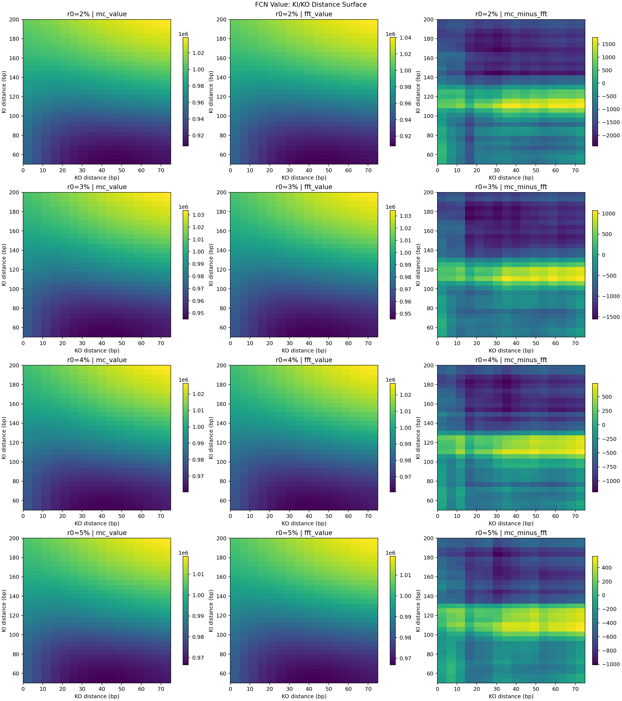
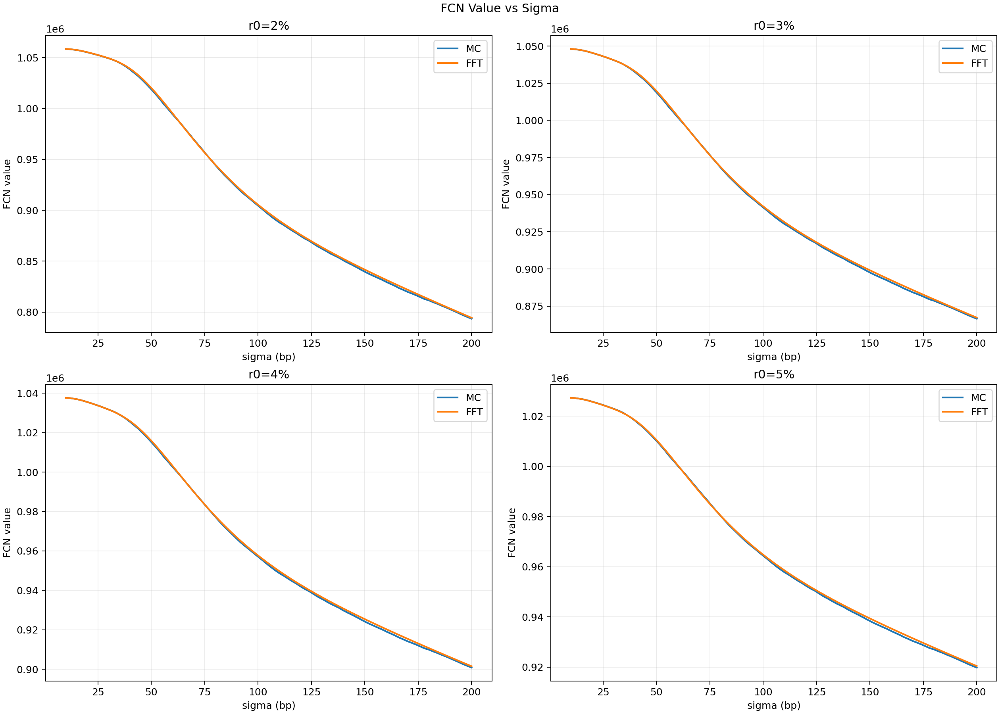
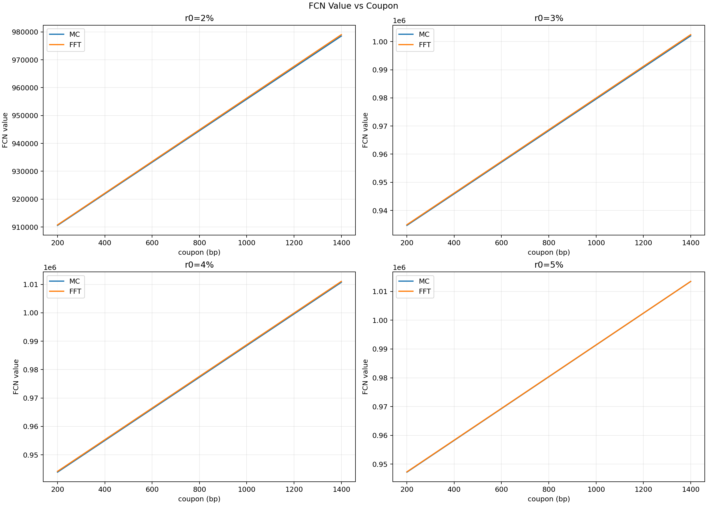
03 / Risk Surfaces
把 Greeks 从一条曲线展开为时间曲面。
单一时点的 Greeks 无法表达路径依赖产品在临近障碍和到期时的风险迁移。这里固定合同与已实现状态，以“已存续交易日 × 当前收益率”为二维状态，分别展示未敲入与已敲入条件下的发行人风险。
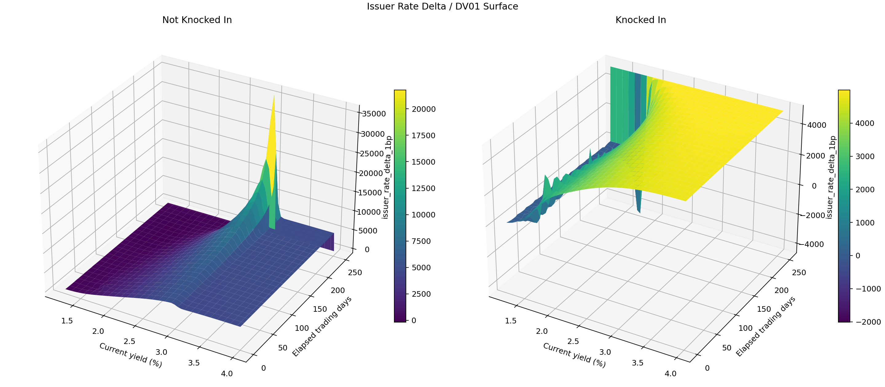
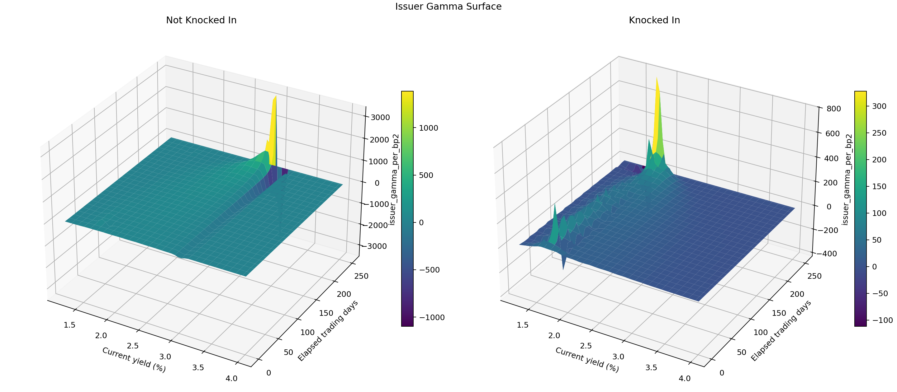
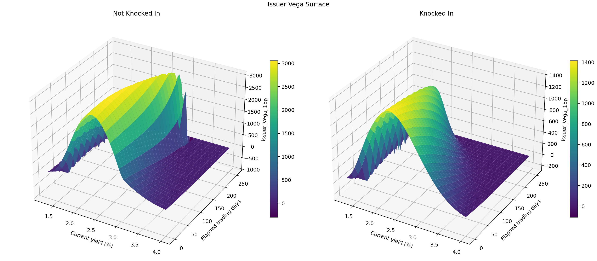
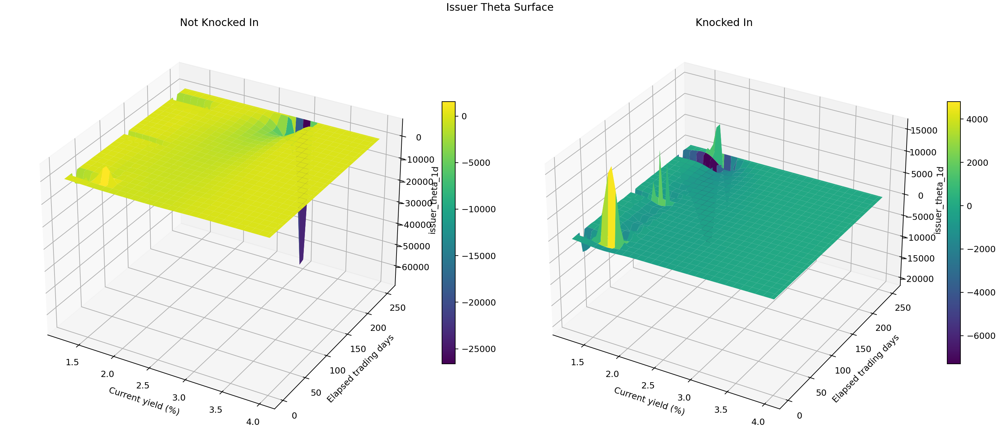
04 / Single Issue
单期实验将估值、仓位与归因放在同一条时间线上。
以 2023 年 1 月 3 日发行的一期产品为例，MC 与 FFT 价值路径保持接近；两者的最终净对冲 PnL 分别约为 −9,638 美元和 −8,980 美元。FFT Greeks 更平滑，因而仓位变化更容易解释。
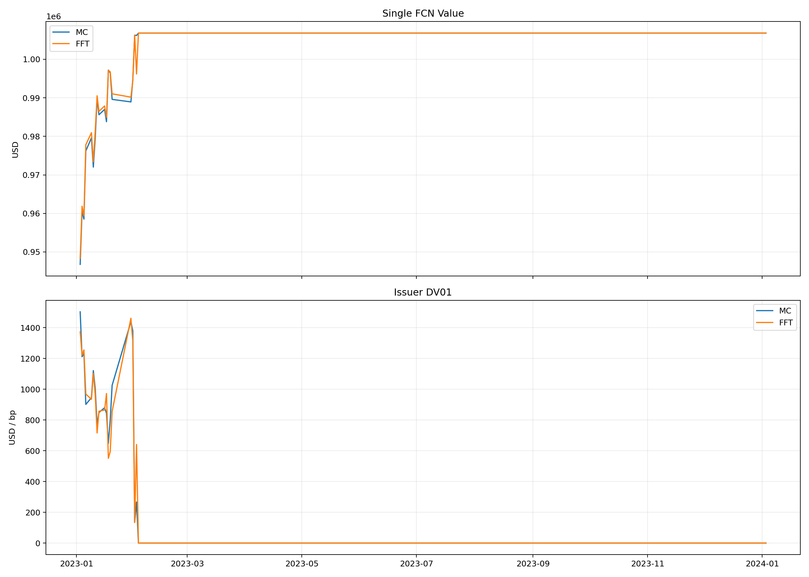
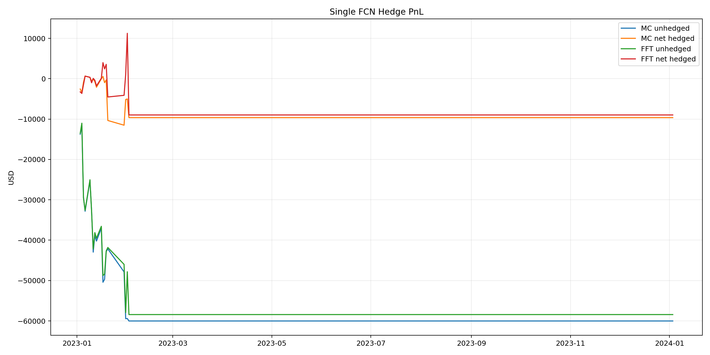
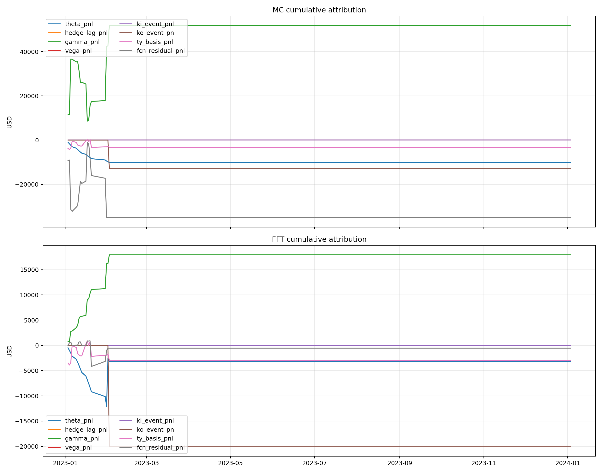
05 / Rolling Portfolio
170 期发行把单个案例变成组合证据。
从 2011 年 1 月到 2025 年 2 月，每月首个共同交易日发行一只一年期 FCN。日度对冲组合累计净 PnL 约 803 万美元，单期胜率约 57.6%。更重要的是，对冲后单期 PnL 标准差约 10.56 万美元，相比未对冲的 35.16 万美元下降约 70%。
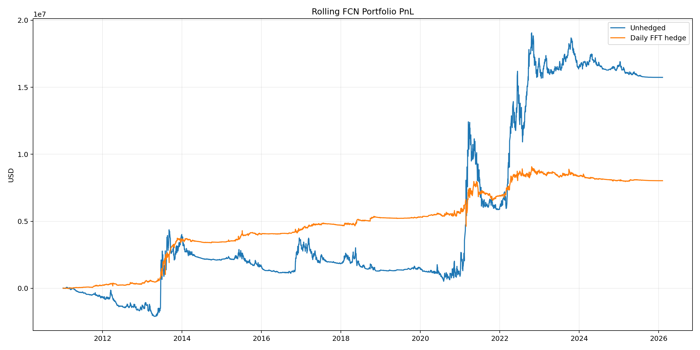
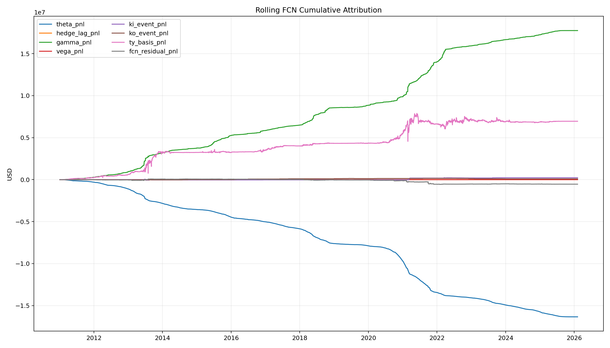
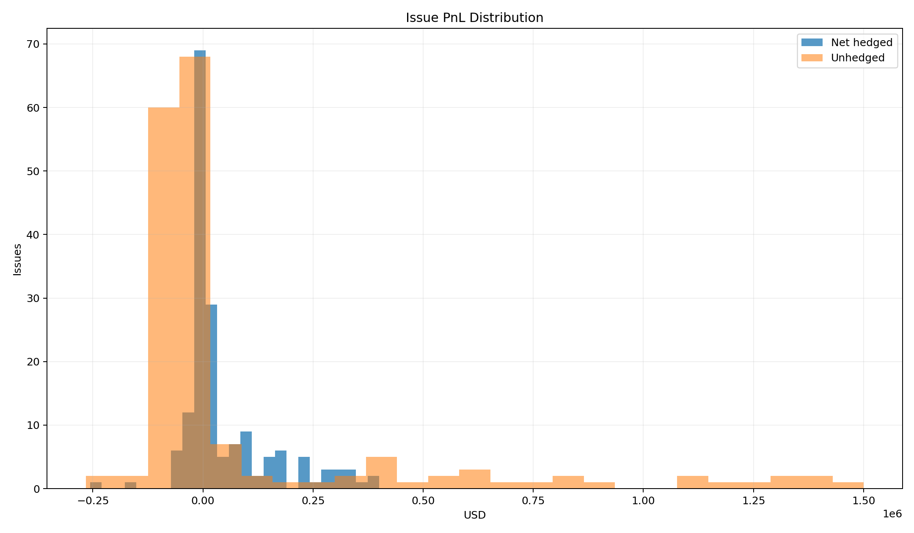
06 / Strategy Design
调仓频率是风险控制与交易摩擦之间的选择。
在同一套 FFT 价值与现金流上重放未对冲、每日、每周、每月和 event-adaptive 五种仓位。Event-adaptive 只在 KI 危险区、KO 事件窗、已敲入状态或周度检查时考虑交易，相比每日对冲将调仓次数由 25,135 次降至 2,209 次，减少约 91%；交易成本由约 12.48 万美元降至 5.74 万美元，减少约 54%。
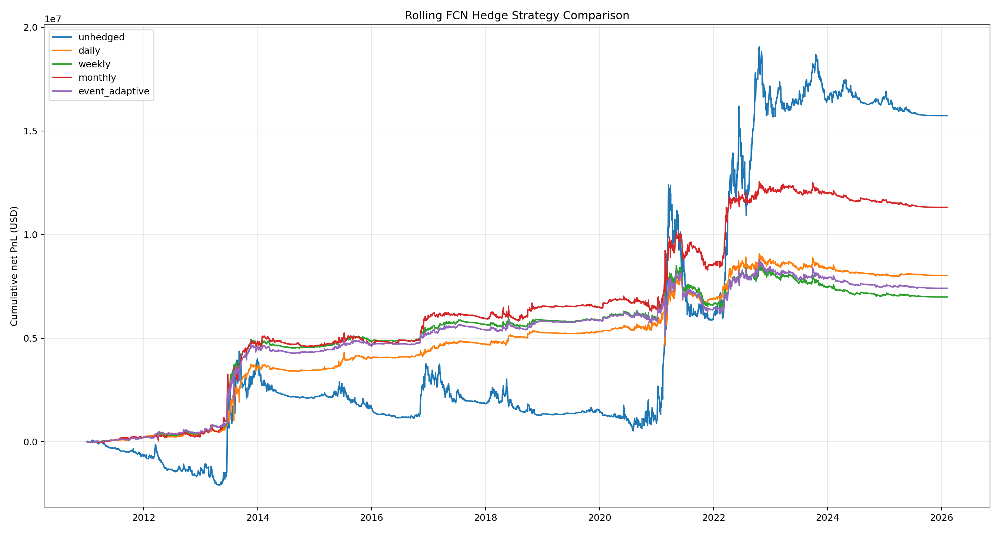
Daily最高对冲胜率 57.6%，但承担最多交易。
Monthly对冲策略中累计净 PnL 最高，但更长的仓位滞后意味着不同的风险暴露。
Event-adaptive以显著更低的换手与成本换取事件区的重点风险覆盖。
Unhedged累计 PnL 更高并不等于更优策略；其胜率仅 29.4%，单期波动约为日度对冲的 3.3 倍。
07 / Takeaways
价格一致只是起点，风险稳定性才决定对冲质量。
- 01
MC 与 FFT 能给出接近的价格，但高阶有限差分会放大 MC 抽样噪声。
- 02
路径状态和剩余期限共同决定 Greeks；障碍附近不能用单一静态曲线概括。
- 03
DV01 对冲有效压缩方向性波动，但 Gamma、事件跳变、TY basis 和离散调仓仍形成剩余风险。
- 04
策略评价需要同时比较收益、分布、成本和尾部风险，而不是只看最终累计 PnL。
当前限制：TY DV01 使用固定久期近似，尚未引入 CTD 与转换因子；连续合约没有显式模拟双合约展期；固定 sigma 实验中的 Vega PnL 为零。这些限制被保留在归因残差和研究结论中，而非隐藏。
阅读完整研究笔记